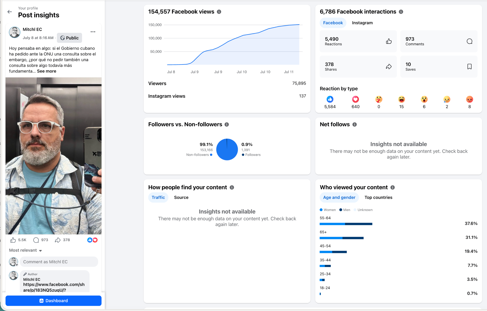

Consulta específica
Una pregunta clara sobre la continuidad del sistema político de partido único, separada de otros debates.
Una solicitud internacional para promover una consulta cubana libre, directa, secreta y verificable, con observación independiente y garantías contra la coacción y las represalias.
No se propone que gane una opción. Se propone que la verdad pueda conocerse.
Datos de Meta Insights al 11 de julio de 2026. Estas métricas muestran alcance e interés; no constituyen una encuesta ni demuestran una mayoría.
De la conversación a la acción
La carta pide buenos oficios internacionales activos: no una intervención extranjera ni un resultado impuesto, sino condiciones que permitan conocer la voluntad popular sin miedo.
Una pregunta clara sobre la continuidad del sistema político de partido único, separada de otros debates.
Interlocución diplomática para promover conversaciones, consentimiento, asistencia técnica y observación independiente.
Participación de los nacionales cubanos en la Isla y en el exterior, con resultados también publicados por separado.
Reconocer el resultado y activar el paso previamente convenido, sin prometer una destitución ni una reforma automática.
La esencia de la propuesta
La consulta solo tendría sentido si cada persona sabe que su voto no podrá vincularse con su identidad y que participar no traerá consecuencias.
Ningún registro, código o dispositivo podría relacionar a una persona con su opción.
Protección frente a amenazas, vigilancia, pérdida de empleo o estudios, detención o castigo familiar.
Derecho efectivo a defender el SÍ, el NO, la abstención o el voto en blanco.
Acceso al registro, campaña, votación, conteo, actas, reclamaciones y entorno posterior.
Actas públicas, auditorías independientes y un mecanismo de impugnación.
Un canal confidencial para documentar y responder rápidamente ante represalias.
Reciprocidad democrática
Se reconoce que el sistema cuenta con respaldo mayoritario bajo garantías auténticas. El derecho a la crítica pacífica permanece.
Se reconoce que el partido único carece de respaldo mayoritario y se inicia el procedimiento pacífico y constitucional previamente acordado.
Se solicita un punto focal, representante especial o mecanismo periódico de escucha para la pluralidad cívica cubana excluida.
Ejercicio demostrativo
Esta simulación muestra cómo se presentaría una decisión binaria. No envía, almacena ni contabiliza tu selección.
SIMULACIÓN LOCAL · DATOS NO RECOPILADOS
DEMOSTRACIÓN COMPLETADA
Tu selección no fue enviada ni almacenada. En una consulta real, el secreto, el registro electoral, la observación y la auditoría tendrían que estar garantizados.
Registro público
No existe garantía de respuesta ni de aceptación. Sí existe el compromiso de documentar cada envío, acuse, remisión, respuesta o silencio.

Remitida a seis autoridades e instituciones internacionales.
Se solicitaron confirmación de recepción, número de referencia y unidad competente.
El texto íntegro se publicará después de confirmar su recepción o de transcurrido el plazo inicial de seguimiento.
Se registrará cualquier acción, remisión, negativa o ausencia de respuesta.
Destinatarios institucionales
Oficina del Secretario General António Guterres
Alto Comisionado Volker Türk
Comisionado Lars Castellucci
Presidenta Roberta Metsola
Embajador Jens Urban
Comisión Interamericana de Derechos Humanos
“No represento a un partido, gobierno ni organización opositora, ni pretendo hablar por cada cubano.”
Fragmento de la carta enviadaCómo se preparó
Los comentarios disponibles fueron revisados y, con ayuda de inteligencia artificial, organizados para identificar sugerencias, preocupaciones y objeciones. La IA apoyó el procesamiento; las decisiones, la investigación y la responsabilidad editorial permanecieron en manos del promotor.
La carta fue redactada con lenguaje formal, fuentes verificables y atención a los límites jurídicos e institucionales. No se presenta como una opinión legal vinculante ni como prueba de una mayoría.
Una iniciativa cívica, pacífica y plural
Para recibir las próximas actualizaciones, participa en el grupo ENTRE TODOS.